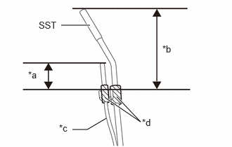
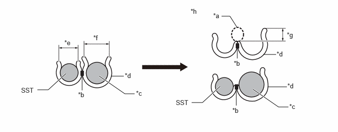
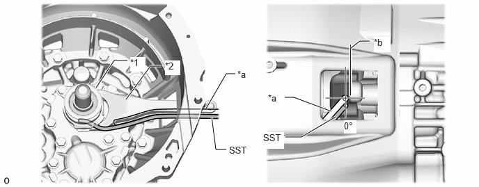
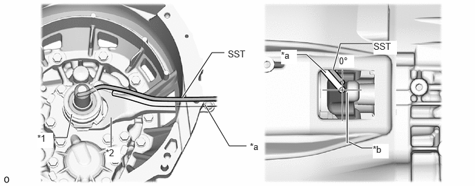

| Last Modified: 10-07-2025 | 6.11:8.1.0 | Doc ID: RM100000002GQKA |
| Model Year Start: 2024 | Model: Tacoma | Prod Date Range: [12/2023 - ] |
| Title: CLUTCH: CLUTCH SYSTEM: ON-VEHICLE INSPECTION; 2024 - 2026 MY Tacoma [12/2023 - ] | ||
ON-VEHICLE INSPECTION
PROCEDURE
PROCEDURE
1. CHECK FOR ABNORMAL NOISE FROM AROUND CLUTCH RELEASE BEARING ASSEMBLY AND CLUTCH RELEASE FORK SUB-ASSEMBLY CONTACT AREAS
(a) Depress the clutch pedal several times.
OK:
No abnormal noise from around clutch release bearing assembly and clutch release fork sub-assembly contact areas.
If abnormal noise is heard, proceed to next step.
2. APPLY CLUTCH RELEASE HUB GREASE
(a) Using tape, secure the borescope and SST as shown in the illustration.
09315-00030 |
*a |
20 mm (0.787 in.) |
|
*b |
70 mm (2.76 in.) |
|
*c |
Borescope |
|
*d |
Tape |
HINT:
- Efficient securing of the borescope and SST can
be performed by using the clip of 90464-00192.

*a
Cutting the center zone
*b
Weld zone
*c
Borescope
*d
Clip
*e
7.5 mm (0.295 in.)
*f
10 mm (0.394 in.)
*g
6.0 mm (0.236 in.)
*h
When the outer diameter of the borescope is too thick to fit into the clip
- A gap may occur between the borescope and SST and the clip. In this case, wrap tape in the relevant locations to adjust to an appropriate fitting with the clip.
- When the outer diameter of the borescope is too thick to fit into the clip, this issue can be resolved by securing the weld zone and cutting the center zone.
|
(b) Inject Grease to the grease tank of SST. Grease: Toyota Genuine Clutch Release Hub Grease or equivalent (mineral ingredients should not be included) NOTICE: Push out the grease until clean grease is discharged from the nozzle. |
|
(c) Lift the vehicle.
(d) Remove the No. 2 engine under cover assembly (w/ Cover).
HINT:
Click here
![2024 MY Tacoma Tacoma HV [12/2023 - 03/2024]; AXLE AND DIFFERENTIAL: FRONT DIFFERENTIAL CARRIER ASSEMBLY: REMOVAL+](../../../../stylegraphics/info.gif)
(e) Remove the No. 2 engine under cover assembly (w/ Transfer Skid Plate).
HINT:
Click here
(f) Remove the front stabilizer bar protector (w/ Protector).
HINT:
Click here
(g) Disconnect the clutch release cylinder assembly together with the clutch release cylinder to flexible hose tube.
NOTICE:
When removing the bolt of the clutch release cylinder assembly, hold the clutch release fork sub-assembly facing the rear of the vehicle to prevent damage to the threads.
HINT:
- There is no need to disconnect the clutch release cylinder to flexible hose tube from the clutch release cylinder assembly.
- Disconnect the clutch release cylinder to
flexible hose tube with clutch release cylinder
assembly only as much as is necessary for the grease
application work.
After disconnecting the clutch release cylinder to flexible hose tube with clutch release cylinder assembly, suspend it with a rope or equivalent tool to prevent it from being subjected to a load.
(h) Remove the clutch release fork boot.
(i) Turn on the power of the borescope, check the monitor and insert SST along the clutch release fork sub-assembly into the lower side of the clutch release fork sub-assembly while paying attention to the positioning of the borescope and SST.
09315-00030 |
*1 |
Clutch Release Bearing Assembly |
*2 |
Clutch Release Fork Sub-assembly |
|
*a |
Borescope |
*b |
Part of Clutch Release Fork Sub-assembly Surface |
HINT:
The angle is the angle of SST and the borescope when the angle of the part of the clutch release fork sub-assembly surface and SST is 0°.
(j) Insert the nozzle of SST between the clutch release fork sub-assembly and clutch release bearing assembly while checking the monitor, and inject grease.
Grease:
Toyota Genuine Clutch Release Hub Grease or equivalent (mineral ingredients should not be included)
NOTICE:
- Do not apply excessive grease.
- Keep the surrounding parts free from grease.
HINT:
- Push 2 or 3 times and inject 1.0 to 1.3 g (0.04 to 0.05 oz) of grease.
- Approximately 0.4 g (0.01 oz) of grease will be discharged with 1 push. (20°C (68°F))
(k) Remove the borescope and SST.
(l) Check the monitor and insert SST along the clutch release fork sub-assembly into the upper side of the clutch release fork sub-assembly while paying attention to the positioning of the borescope and SST.
09315-00030 |
*1 |
Clutch Release Bearing Assembly |
*2 |
Clutch Release Fork Sub-assembly |
|
*a |
Borescope |
*b |
Part of Clutch Release Fork Sub-assembly Surface |
HINT:
The angle is the angle of SST and the borescope when the angle of the part of the clutch release fork sub-assembly surface and SST is 0°.
(m) Insert the nozzle of SST between the clutch release fork sub-assembly and clutch release bearing assembly while checking the monitor, and inject grease.
Grease:
Toyota Genuine Clutch Release Hub Grease or equivalent (mineral ingredients should not be included)
NOTICE:
- Do not apply excessive grease.
- Keep the surrounding parts free from grease.
HINT:
- Push 2 or 3 times and inject 1.0 to 1.3 g (0.04 to 0.05 oz) of grease.
- Approximately 0.4 g (0.01 oz) of grease will be discharged with 1 push. (20°C (68°F))
(n) Remove the borescope and SST.
(o) Install the clutch release fork boot.
(p) Restore the clutch release cylinder assembly together with the clutch release cylinder to flexible hose tube.
NOTICE:
When installing the bolt of the clutch release cylinder assembly, hold the clutch release fork sub-assembly facing the rear of the vehicle to prevent damage to the threads.
(q) Install the front stabilizer bar protector (w/ Protector).
HINT:
Click here
(r) Install the No. 2 engine under cover assembly (w/ Transfer Skid Plate).
HINT:
Click here
(s) Install the No. 2 engine under cover assembly (w/ Transfer Skid Plate)(w/ Cover).
HINT:
Click here